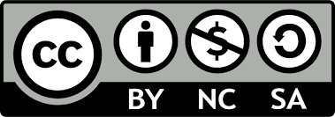

01 - Einleitung
1 Ziel der Vorlesung
Ziel der Vorlesung ist es, einen Überblick über die gängigsten Formen von Machine Learning zu vermitteln. Dabei werden einfache Grundlagen vermittelt und dann auf verschiedene Beispiele angewandt.
- Perzeptron
- Einfache Neuronale Netze
- Überwachtes Lernen
- Nicht überwachtes Lernen
- Bestärkendes Lernen (Reinforced Learning)
2 Voraussetzungen
Dieses Skript setzt nicht bei Null an, sondern setzt einige Grundlagen voraus. Insbesondere sind diese neben den Grundlagen der linearen Algebra
- Grundlagen Python
- sicherer Umgang mit numpy und matplotlib
Sollten Sie in den Grundlagen noch Lücken haben, empfehlen wir die Bausteine Computergestützter Datenanalyse des Projektes BCD von ORCA.nrw. Das vom Land NRW geförderte Projekt BCD (Bausteine Computergestützter Datenanlyse) beschäftigt sich mit der Erstellung von Lehrinhalten rund um die Datenanalyse. Alle Inhalte sind frei verfügbar und auf die Programmiersprachen R und Python ausgerichtet.
Für dieses Skript besonders relevante Bausteine sind:
Bausteine Comuputergestützter Datenanalyse, Grundlagen und Numpy
Bausteine Comuputergestützter Datenanalyse, Matplotlib
Hilfreich sind auch die Bausteine zu Pandas und zum Einlesen Strukturierter Datensätze
Bausteine Comuputergestützter Datenanalyse, Pandas
Bausteine Comuputergestützter Datenanalyse, Einlesen Strukturierter Datensätze
3 Verwendete Literatur
- J.Steinwender, R.Schwaiger, Neuronale Netze programmmieren mit Python (Rheinwerk Computing)
- A.Müller, S.Guido, Introduction to Machine Learning with Python (O’Reilly)
- A.Geron, Hands-on Machine Learning with SciKit Learn, Keras and Tensor FLow (O’Reilly)
- S.Otte, Das Perzeptron (Hochschule RheinMain)
- Neuromant.de, Das Perzeptron Tutorial
- S.Ansari, Building Computer Vision Applications using Artificial Neuronal Networks (APress)
- D.Kriesel, Ein kleiner Überblick über Neuronale Netze (dkriesel.com)
- Tensorflow Tutorials Autoencoder
- Deeplearningbool Autoencoder
4 Lizenz
Die Inhalte dieses Skriptes sin veröffentlicht unter der Lizenz CC-BY-NC-SA 4.0
Die Lizenz Creative Commons Attribution-NonCommercial-ShareAlike 4.0 International (CC BY-NC-SA 4.0) erlaubt die Nutzung eines Werkes unter folgenden Bedingungen:
- Namensnennung (BY): Der Urheber muss angemessen genannt werden.
- Nicht kommerziell (NC): Die Nutzung darf nicht auf kommerzielle Zwecke ausgerichtet sein.
- Weitergabe unter gleichen Bedingungen (SA): Bearbeitete Versionen müssen unter derselben Lizenz weitergegeben werden.
- Bearbeitung erlaubt: Das Werk darf verändert und weiterverarbeitet werden, solange die Bedingungen eingehalten werden.
Kurz: Nutzung und Bearbeitung sind erlaubt, aber nur nicht-kommerziell, mit Namensnennung und gleicher Lizenz bei Weitergabe.

5 Begriffsdefinitionen
In diesem Kapitel werden die im Folgenden wichtigen Begriffe definiert. Dabei handelt es sich sowohl um mathematische Definionen der verwendendeten Variablen, als auch um semantische Begriffe.
5.1 Verwendete Variablennamen
| Symbol | Bedeutung |
|---|---|
| \(\boldsymbol{x}\) | Eingangsvektor |
| \(y\) | Zielwert |
| \(\boldsymbol{w}\) | Vektor mit Gewichten |
| \(\mathbf{X}\) | Matrix mit allen Eingangsvektoren (Zeilen = Datensätze, Spalten = Features) |
| \(\boldsymbol{y}\) | Vektor mit Zielwerten (Label) |
| \(\mathbf{W}\) | Matrix mit allen Gewichtsvektoren |
| \(\mathbf{Y}\) | Matrix mit allen Zielwerten (Ein Vektor für jede Klasse) |
| \(z\) | Ergebnis der gewichteten Summe |
| \(\phi\) | Aktivierungsfunktion |
| \(o\) | Ausgabe |
| \(\left( \boldsymbol{\hat{x}}, \hat{y} \right); \left( \boldsymbol{\hat{x}}, \boldsymbol{\hat{y}} \right)\) | Trainingsdatensatz mit Eingangsvektor und Zielwert(en) |
| \(\left( \mathbf{\hat{X}}, \boldsymbol{\hat{y}} \right); \left( \mathbf{\hat{X}}, \mathbf{\hat{Y}} \right)\) | Trainingsdatensätze mit Eingangsvektoren und Zielwerten |
5.2 Sonstige Definitionen
| Begriff | Bedeutung |
|---|---|
| Forward-Berechnung | Die Forward-Berechnung ist der Prozess, bei dem Eingabedaten schrittweise durch die Schichten eines neuronalen Netzes propagiert werden, um eine Ausgabe zu berechnen |
| Backpropagation | Backpropagation ist ein Lernverfahren für neuronale Netze, bei dem der Fehler vom Ausgang rückwärts durch das Netzwerk propagiert wird, um die Gewichte mithilfe von Gradientenabstieg anzupassen |
| feature | Features sind die Merkmale oder Eingabedaten, anhand derer das Programm lernt. |
| label | Ein Label ist die erwartete Ausgabe bzw. die korrekte Klassifikation eines Datensatzes. |
| Loss-Funktion | Die Loss-Funktion berechnet den Fehler einzelner Vorhersagen. |
| Kostenfunktion | Die Kostenfunktion gibt an, wie groß der Fehler zwischen den Vorhersagen eines Modells und den tatsächlichen Werten ist. Die Kostenfunktion (Cost Function) fasst die einzelnen Fehler häufig über den gesamten Datensatz zusammen. Synonym: Fehlerfunktion |
6 Machine Learning
Der Fokus dieser Vorlesung bezieht sich auf ein Teilgebiet der KI, dem Machine Learning. Machine Learning bezeichnet Methoden und Algorithmen, die es einem System ermöglichen, Muster in Daten zu erkennen und daraus Vorhersagen oder Entscheidungen zu treffen – und sich dabei mit mehr Daten selbst zu verbessern. Maschine Learning kann für verschiedene Aufgaben eingesetzt werden. Grundsätzlich unterscheidet man zwischen Aufgaben der Regression und Klassifikation.
6.1 Regression
Wird Machine Learning für Regression eingesetzt bedeutet dies, dass ein Modell ermittelt wird, um einen kontinuierlichen Zahlenwert vorherzusagen.
Dazu lernt der Algorithmus aus Trainingsdaten mit Eingabemerkmalen (Features) und einem bekannten Zielwert. Das Modell versucht, eine Funktion zu lernen, die den Zusammenhang zwischen Features und Zielwert beschreibt Danach kann es für neue Daten einen numerischen Wert schätzen.
6.2 Klassifikation
Bei der Klassifikation im Machine Learning sind die Zielwerte diskret und endlich. Das bedeutet, dass jedes Trainingsbeispiel zu einer bestimmten Klasse gehört.
Der Lernalgorithmus erhält einen Trainingsdatensatz, der aus Eingabemerkmalen (Features) und den zugehörigen Klassenlabels besteht. Während des Trainings versucht der Algorithmus eine Funktion oder Entscheidungsregel zu lernen, die den Zusammenhang zwischen den Merkmalen und den Klassen beschreibt. Diese Funktion trennt den Merkmalsraum möglichst so, dass Datenpunkte unterschiedlicher Klassen voneinander unterschieden werden können.
Nach dem Training kann das Modell diese gelernte Funktion auf neue, bisher unbekannte Daten anwenden. Anhand der Merkmale eines neuen Datenpunkts entscheidet das Modell, zu welcher Klasse er am wahrscheinlichsten gehört.